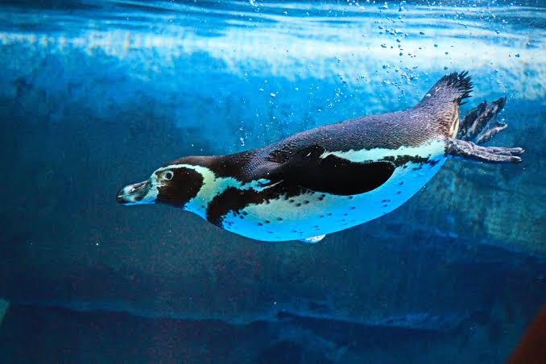

Los pingüinos (Spheniscidae) son una familia de aves, la única del orden Sphenisciformes. Son aves marinas,
no voladoras, que se distribuyen casi exclusivamente en el hemisferio sur, exceptuando el pingüino de las
islas Galápagos (Spheniscus mendiculus). El nombre del orden proviene del vocablo spheniscus, el cual proviene
del griego σφήν (sphen, 'cuña'), y el sufijo diminutivo -iscus, literalmente «cuñita», haciendo referencia a
su forma hidrodinámica al nadar.